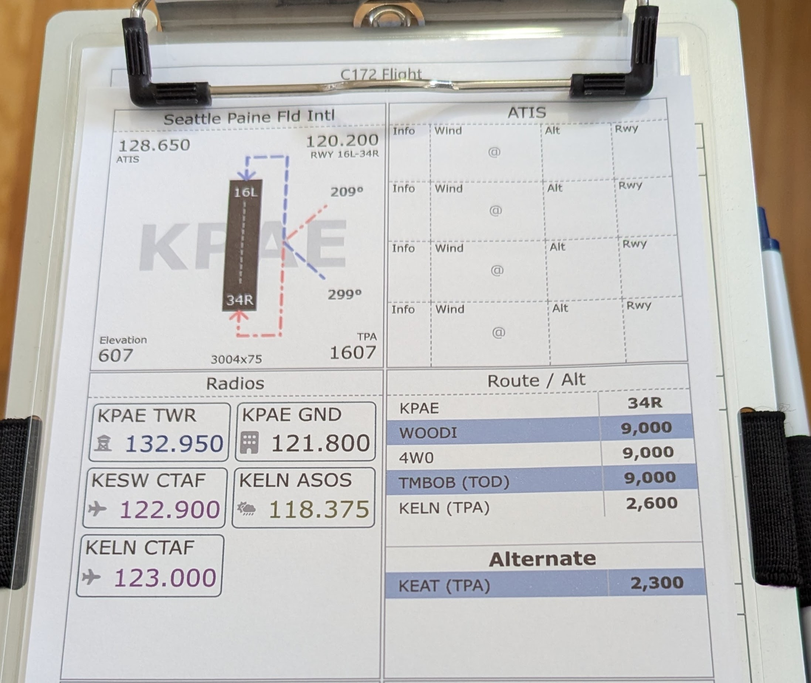

- Glare, reboots, and battery anxiety
- Hard to find what you need, fast
- Distracting screens instead of flying the plane
Build a kneeboard that fits your flying style. Custom, clean, and always ready — in the air or in the sim.
🛫 Create Your Kneeboard 


"I’m a private pilot using GA Kneeboard on all my real and simulated flights. Whether I'm flying VFR or practicing instrument holds, this is what I rely on" - JC